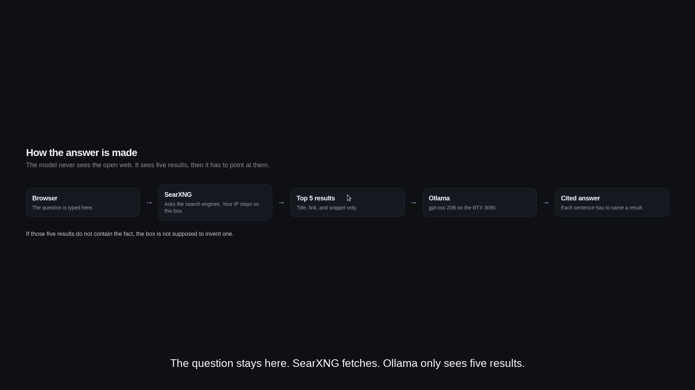
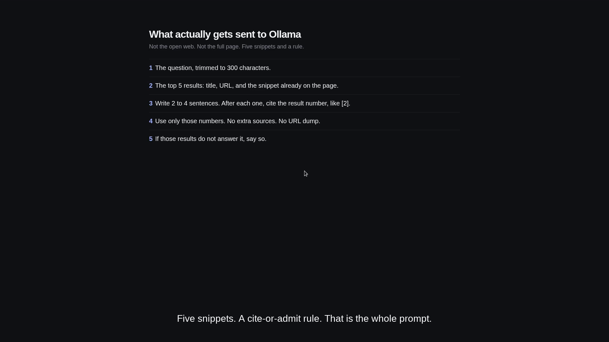
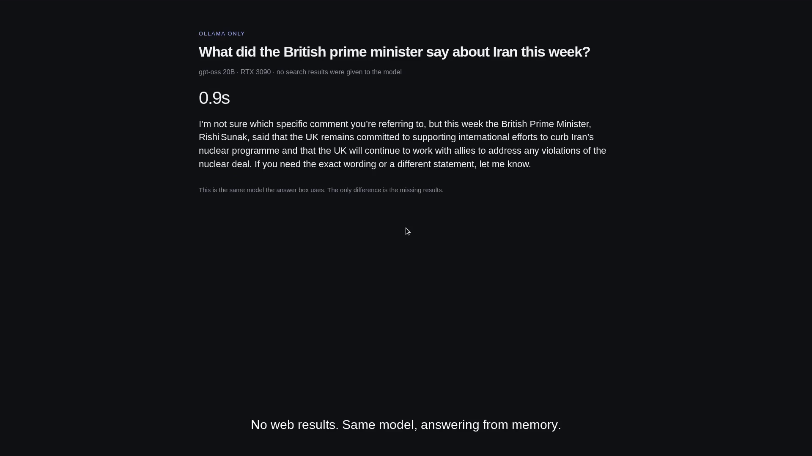
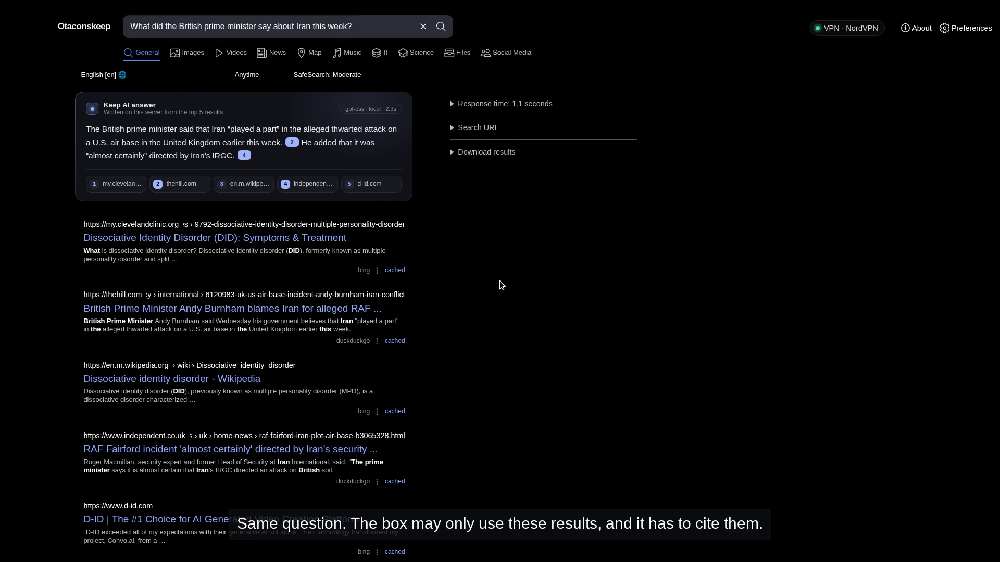
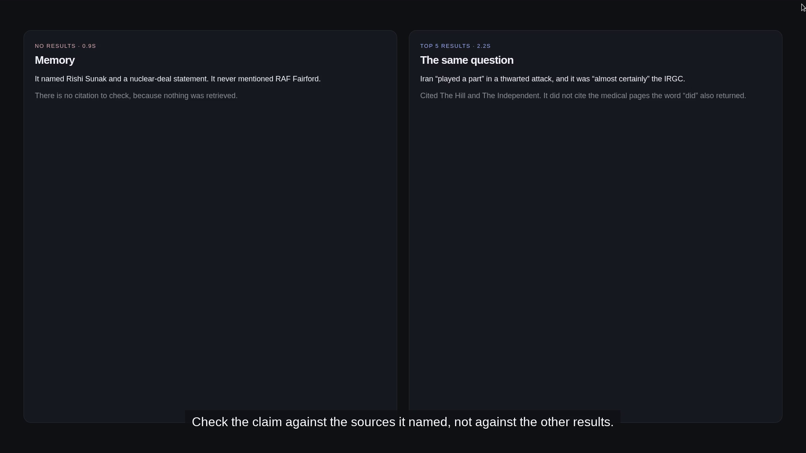
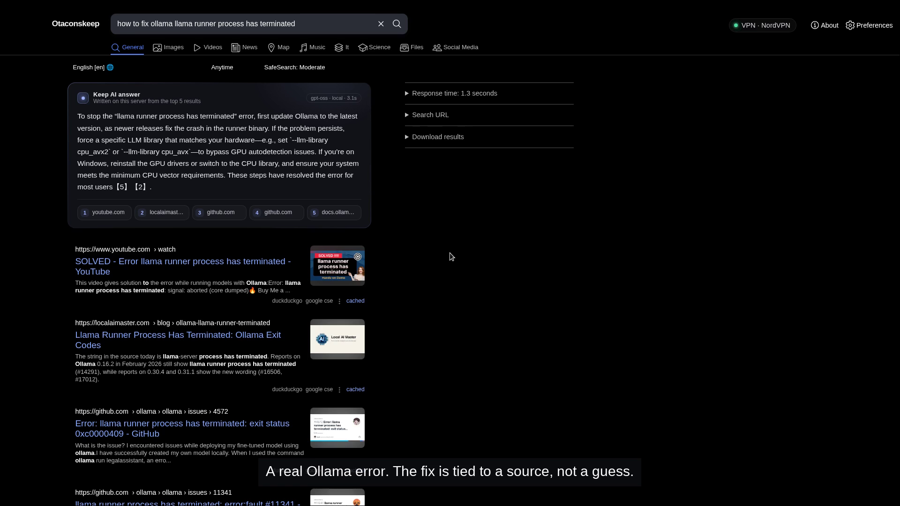
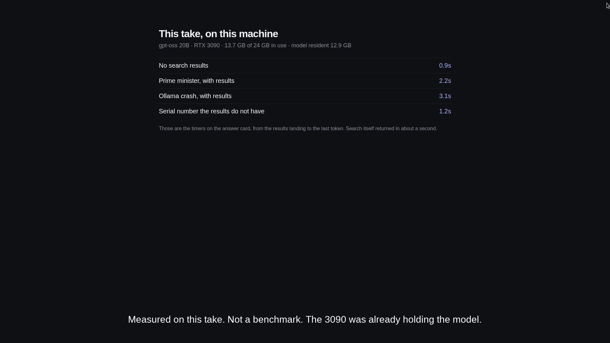
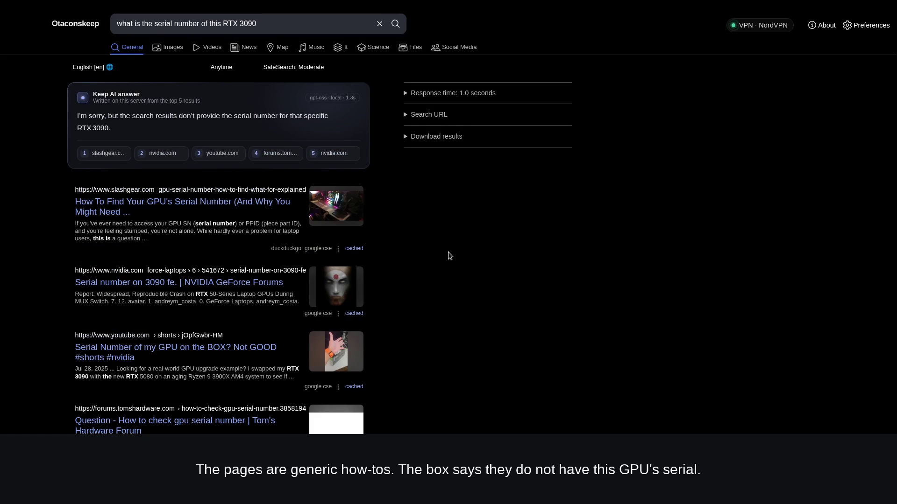

Search alone
Ten links, no sentence
The useful page is often result two or four. Ambiguous words also drag in pages that share a verb and nothing else. You can see them. You still have to read them.
Otaconskeep · SearXNG · local Ollama · October 13, 2026
A private search page that still shows the results, and writes a short answer that has to name which of those results it used. The model never sees the open web. It sees five snippets.
01 // The problem
Ordinary search makes you open tabs until one of them says the thing you needed. A local model with no search answers immediately, from whatever it already memorized, and there is nothing to check.
Search alone
The useful page is often result two or four. Ambiguous words also drag in pages that share a verb and nothing else. You can see them. You still have to read them.
Offline model alone
Ask about this week and the model answers from memory. If that memory is old, it will name the wrong person and miss the incident. There is no source chip to click.
02 // Architecture

On this Keep the results page is branded Otaconskeep: dark simple theme, the wordmark in place of the stock SearXNG logo, and a card titled Keep AI answer. The card’s chip shows the model name and the seconds from results landing to the last token.
03 // The prompt

[2].The browser posts that package to /ok/ai on the same origin. The plugin streams tokens back as NDJSON. Cross-site requests are rejected. If Ollama is down, the card says the local model is not reachable. It does not fall over to a cloud model.
04 // Side by side
Question: what did the British prime minister say about Iran this week? Same model both times, gpt-oss:20b, thinking set low.



The word “did” pulled in unrelated medical and product pages. They sat in the five. The answer did not use them. The cited headlines are the ones that actually discuss the incident. That is the difference search integration is supposed to make: a sentence you can click back to, and a refusal to treat every hit as support.
05 // A practical search
The second search was how to fix ollama llama runner process has terminated. This is the kind of question a results page usually answers with a video, a blog, and two GitHub issues, and leaves you to merge them.

06 // Performance

| Run | Wait | What the card did |
|---|---|---|
| No search results | 0.9s | Answered from memory. No citation. |
| Prime minister, with results | 2.2s | Cited The Hill and The Independent. |
| Ollama crash, with results | 3.1s | Cited the pages that describe the fix. |
| Serial number the results do not have | 1.2s | Said the results do not contain it. |
Model: gpt-oss:20b. GPU: NVIDIA GeForce RTX 3090, 24 GB. During the take, about 13.7 GB was in use and the resident model was about 12.9 GB. The chip on the card is results-landing to the last token. Search itself returned in about a second, which is the separate “response time” line on the results page.
Another model tag can sit on the same Ollama host. The answer box uses the model named in OK_AI_MODEL. Confirm the running tag with ollama ps before you quote a number.
07 // One limitation
Query: what is the serial number of this RTX 3090. The hits are generic how-tos and forum threads about finding a GPU serial. None of them are this machine.

That refusal is the behavior you want. A nearby how-to is not a serial number. The same rule covers a dead Ollama: the card shows “The local model is not reachable right now.” It does not invent an answer while the model is down.
08 // Privacy
The model call stays on your machine. The search call does not. SearXNG asks the engines you enabled, so those providers still see the query and the exit IP of whatever path you gave them.
Generate a new SearXNG secret with openssl rand -hex 32. Keep it in your env file or your local settings, not in a screenshot and not in a commit.
09 // Tutorial
You need Docker, a running Ollama, and a model that already fits on your GPU. This Keep used gpt-oss:20b. Use another tag if that one does not fit. The card will print whatever OK_AI_MODEL is set to.
ollama pull gpt-oss:20b
ollama ps
ollama ps should show that tag resident on the GPU before you time a search. A silent router in front of Ollama can swap models. Talk to the Ollama you think you are talking to.
Put docker-compose.yml, otacon_ai.py, and ok_ai_card.html in one directory. Copy settings.example.yml to searxng/settings.yml and replace both secret placeholders. Inside the container, 127.0.0.1 is the container, so OK_AI_OLLAMA has to be an address the container can route to the host. On a typical Linux Docker bridge that is http://172.17.0.1:11434. Change it if your host listens elsewhere.
openssl rand -hex 32
# paste that value into SEARXNG_SECRET and server.secret_key
docker compose up -d
On current SearXNG, a plugins: map replaces the default plugin map. It does not merge. The example file lists the stock plugins this Keep keeps, plus searx.plugins.otacon_ai.SXNGPlugin. An old enabled_plugins: list does nothing on this image.
brand.public_instances is a string. An empty string hides the public-instance list. The boolean false fails to load.
The locks in preferences.lock stop a cookie from turning safe search, autocomplete, the image proxy, POST, or the query-in-title flag back off.
Mount ok_ai_card.html at searx/templates/simple/ok_ai_card.html, which the example compose file already does. In the theme base.html, inside the results area, add:
{% include 'simple/ok_ai_card.html' %}
SearXNG caches templates. Restart the container after a template or settings change. The card reads the top result articles already in the page, posts {q, results} to /ok/ai, and turns [2] into a button that links to result 2. Hovering a citation outlines that result.
The results logo text in this Keep is the word Otaconskeep, set in the search template, with general.instance_name set to the same name. The homepage clock, lock line, and photo headlines are a separate template on the same instance. They use the same dark theme. They are not required for the answer card to run.
Read the chip. That number is the wait you felt, on the model that was loaded.
10 // Files
Close
A local model is quick and unaccountable. A search page is accountable and slow to read. The useful object is the card that can only talk about the five results in front of you, shows how many seconds that took, and is willing to say the pages do not contain the answer.
Next for this Keep is a tighter homepage, and a habit of opening the cited page before trusting the sentence. The box is a reader. It is not a second source.